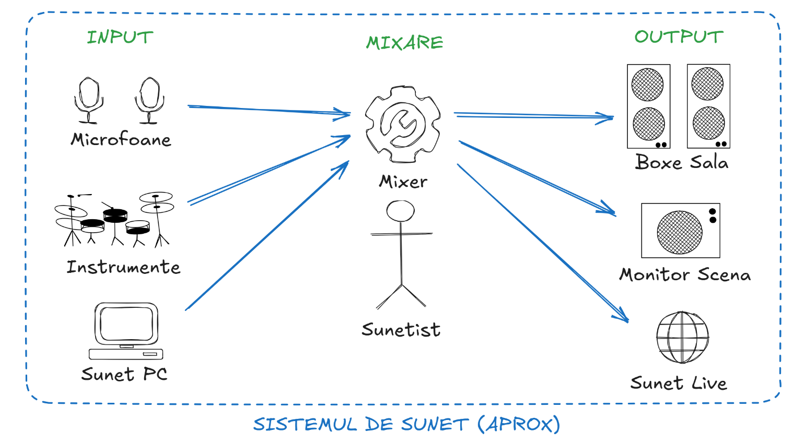

1. Sistemul de sunet

2. Lanțul semnalului pe un canal
Semnalul unui canal trece, în această ordine, prin următoarele etape. Dacă ceva nu sună bine, verifică etapele de la stânga la dreapta.
3. Cele 10 acțiuni esențiale
-
Pornire / Oprire mixer
Ce înseamnă: pornirea și oprirea mixerului de la butonul de alimentare din spatele acestuia.
De ce: ordinea corectă de pornire/oprire previne pocnetele puternice în boxe, care pot deteriora echipamentul.
Cum: la început pornește mixerul, apoi sistemul audio (amplificatoare/boxe). La finalul programului oprește întâi sistemul audio, apoi mixerul.
-
Comutare între bănci de canale (LAYER)
Ce înseamnă: cele 16 faderuri fizice pot controla mai multe grupuri de canale, comutate din butoanele LAYER.
De ce: ca să ajungi rapid la orice canal în timpul programului, chiar dacă mixerul are mai multe canale decât faderuri.
Cum: apasă CH 1-16, CH 17-32, AUX sau FX. La fel se comută și băncile pentru ieșiri (BUS / MAIN).
-
Reglare gain și verificarea nivelului de semnal
Ce înseamnă: GAIN reglează cât de tare intră semnalul în mixer (etapa 2 din lanț), înainte de orice altă prelucrare.
De ce: un gain prea mic dă semnal slab și zgomotos, iar unul prea mare distorsionează sunetul pe tot lanțul. Se reglează o singură dată, corect, la începutul programului.
Cum: apasă SELECT pe canalul dorit, apoi rotește encoderul GAIN din secțiunea CONFIG/PREAMP. Urmărește LED-urile canalului și ecranul LCD: ideal, semnalul atinge galbenul în vârfuri și nu rămâne în roșu.
Recomandare: în timpul programului ajustează volumul din FADER, nu din GAIN.
-
Filtru LOW CUT (HPF – High Pass Filter)
Ce înseamnă: taie frecvențele joase de sub o anumită limită și lasă să treacă restul (etapa 3 din lanț).
De ce: elimină zgomotul de fundal, vibrațiile din podea, zgomotul de manipulare a microfonului și „noroiul” din mix.
Cum: SELECT pe canal, activează LOW CUT și setează frecvența de tăiere în funcție de sursă (ex.: în jur de 80–100 Hz pentru voce). Atenție: nu se aplică la bass sau la toba mare.
-
Compresie (COMP)
Ce înseamnă: reduce automat vârfurile de volum, uniformizând semnalul (etapa 4 din lanț).
De ce: vocile care variază mult (când cineva vorbește șoptit, apoi strigă) rămân audibile fără să fie nevoie să miști permanent faderul.
Cum: SELECT pe canal, intră în secțiunea COMP (dynamics) și activeaz-o. Folosește o compresie moderată; dacă sunetul devine „strivit”, redu efectul.
-
Ajustare EQ (ex.: nivel bass)
Ce înseamnă: egalizarea – accentuezi sau reduci anumite zone de frecvență ale canalului (etapa 5 din lanț).
De ce: corectezi un sunet prea „gros”, prea „ascuțit” sau neclar și îl potrivești în mixul general.
Cum: SELECT pe canal, intră în meniul EQ și folosește encoderele. Pentru bass, reglează zona joasă (aprox. 300 Hz – LOW GAIN). Fă ajustări mici și ascultă rezultatul.
-
Mute / Unmute canal
Ce înseamnă: oprește complet semnalul canalului (etapa 6 din lanț).
De ce: elimină zgomotele de la microfoanele nefolosite și evită intrările nedorite în timpul programului.
Cum: apasă butonul MUTE de pe canalul dorit. LED-ul roșu aprins indică faptul că acel canal este mutat.
-
Control trimiteri către ieșiri (BUS SENDS)
Ce înseamnă: pe lângă mixul principal, fiecare canal poate fi trimis și către alte ieșiri – monitorul de scenă, transmisia live etc. (etapa 7 din lanț).
De ce: ca fiecare ieșire să primească doar ce are nevoie. Exemplu: corul nu trebuie să se audă în monitorul de scenă, altfel apare microfonie sau derutare pentru cei de pe scenă.
Cum: apasă SELECT pe canalul corului, apoi SENDS ON FADER. Verifică ce BUS-uri sunt active (ex.: BUS 1–16). Dacă monitorul de scenă este pe BUS 1, adu faderul de trimitere către BUS 1 la zero. La final ieși din modul SENDS ON FADER, ca faderele să revină la mixul principal.
-
Reglare fader
Ce înseamnă: volumul cu care canalul intră în mixul principal (etapa 8 din lanț).
De ce: este reglajul principal, folosit permanent în timpul programului, pentru echilibrul între voci și instrumente.
Cum: mișcă faderul fizic al canalului în sus sau în jos. Nu este necesar să apeși SELECT pentru această acțiune.
-
Ascultare canal individual (SOLO)
Ce înseamnă: trimite un singur canal în căști, fără să afecteze sunetul din sală.
De ce: pentru a identifica sursa unui zgomot sau pentru a verifica un microfon înainte de a-l deschide în mix.
Cum: apasă SOLO pe canalul dorit și ascultă în căști. Dezactivează toate canalele solo cu butonul CLEAR SOLO.